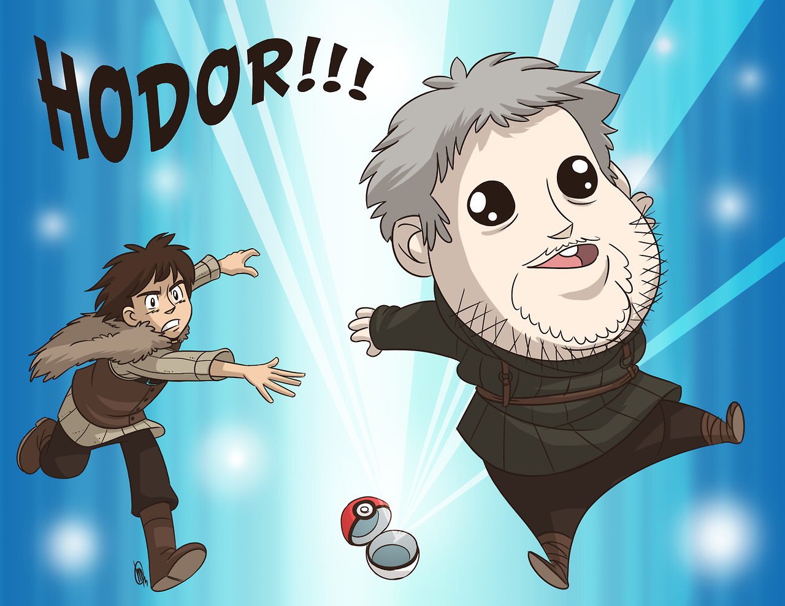

Why did Hodor say Hodor?
That wasn't his given name. Born Wylis, the servant to House Stark only became 'Hodor' after suffering a life-changing seizure in his youth. That event damaged his brain and took away his power of speech, leaving him only able to say the one word that would become his name.